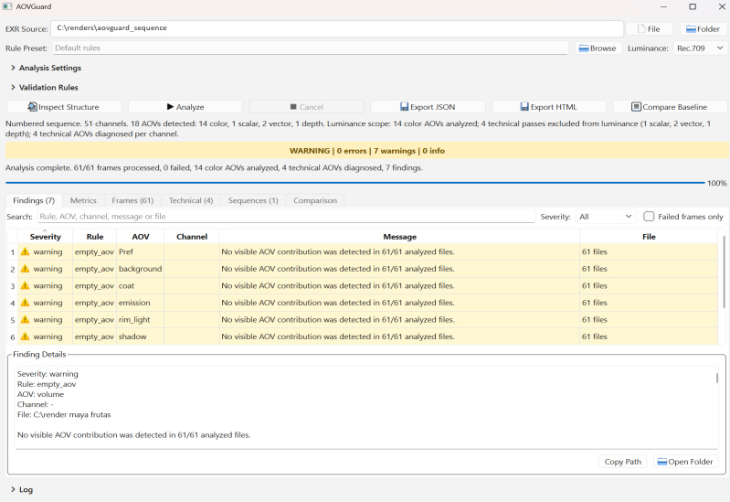
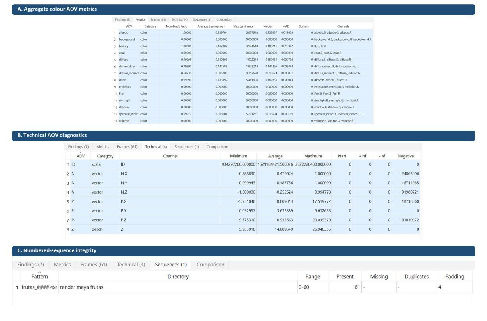

Structure before assumptions
Channel names and roles establish how each AOV is handled. Colour brightness checks are separated from per-channel diagnostics for vectors and depth, and uncertain structures remain explicit.
02 / PIPELINE DEVELOPMENT
Automated EXR and AOV validation for VFX lighting and compositing pipelines.
Individual academic Master's project · Bournemouth University
View the repository (opens in a new tab) Python
AOVs
Python
AOVs
/ OVERVIEW
I designed and developed AOVGuard to inspect rendered EXR files and identify common technical problems before they reach later stages of a lighting or compositing pipeline. The goal is to reduce repetitive manual checking and help artists find potentially problematic renders more quickly.
AOVGuard 2.0 reorganises the workflow around automatic structure inspection, canonical RGB, configurable brightness metrics and frame-first processing. A shared report model serves the PySide6 interface, command line, JSON/HTML export and baseline comparison.
Developed for my MSc at Bournemouth University, the project is a focused validation prototype: it reports technical evidence for artists to interpret in the context of a shot.
/ SYSTEM DESIGN
The architecture keeps discovery, reading, analysis and presentation separate while the CLI, GUI and exporters share the same report.

Channel names and roles establish how each AOV is handled. Colour brightness checks are separated from per-channel diagnostics for vectors and depth, and uncertain structures remain explicit.
CLI, GUI and exporters consume the same models and findings. Integration tests compare canonical report payloads to check that the interfaces agree.
Instead of revisiting every frame for each pass, the processing loop reads a frame, updates all supported AOV accumulators and releases its arrays before continuing.

Automatic structure context, findings and shared report results. Figure 4 from the MSc dissertation.
Select the image to view full size ↗
61 Maya/Arnold frames, 51 channels and 18 inferred AOVs, with no missing frames, duplicates or read failures. Figure 6 from the dissertation.
Select the image to view full size ↗/ EVALUATION
Results recorded in the MSc dissertation's final verification snapshot, 14 August 2026.
A controlled benchmark used 12 generated 320 × 180 frames, five AOVs and 30 repetitions per strategy on one Windows workstation. Frame-first processing reduced application-level reader calls from 60 to 12 while preserving the output checksum. Median elapsed time changed from 0.4387 s to 0.1181 s; Python-tracked peak memory increased from about 5.55 MB to 11.08 MB.
The result supports this processing change under those conditions. Native decoder allocations were not fully measured, and the timing ratio is not a general production-performance claim.
Current analysis supports the tested root-RGB and named single-part multilayer structures. Deep and multipart EXRs are detected but rejected by the analysis path. AOV typing is heuristic, and brightness coefficients are not a substitute for colour-space-aware interpretation. Empty or unusual passes require artistic context; direct DCC/render-farm integration remains future work.
Individual project by Joshua Medina.
Developed as my Master’s project at Bournemouth University.